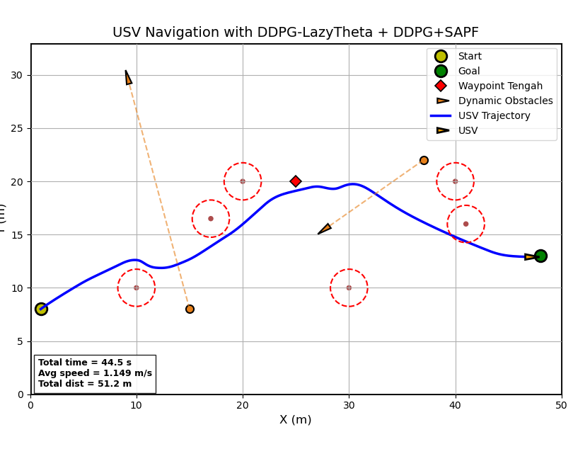

01 — Autonomous systems
Undergraduate thesis · Jan — Jul 2026A smarter route
for the LSS-01 USV.
Adaptive path planning for an unmanned surface vehicle, connecting reinforcement learning with global routing and local obstacle avoidance.
- Python
- NumPy
- OpenCV
- Reinforcement learning
- USV control
50.3 mSimulated path length
37.8 sSimulated travel time
Reported Lazy Theta*–DDPG simulation results.
Path-planning simulationLSS–01

My contribution
Developed DDPG-based parameter tuning for Lazy Theta* and Safe Artificial Potential Field (SAPF) as my undergraduate thesis.
Engineering approach
Adapted heuristic and clearance weights for global routing; attractive gain, repulsive gain, and safe distance for local planning.
Evaluation
Evaluated in simulation and through field implementation on the LSS-01 platform at Kolam InfinITS ITS.
Read the full thesis title
Implementation of Deep Deterministic Policy Gradient as a Parameter Tuner for Lazy Theta* and Safe Artificial Potential Field in Path Planning for the LSS-01 USV